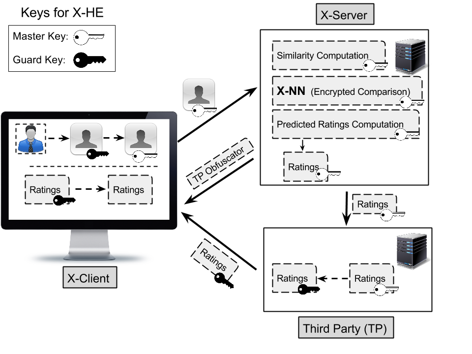

X-Rec
Recommenders largely rely on collaborative filtering schemes to suggest movies, books or news to their users. These filtering schemes are effective in practice. They, nevertheless, are also a threat to privacy as user profiles are made available to the recommender and can even be guessed by other users who analyze the output of the recommendations. Users can simply encrypt their profiles to hide them from the recommender and add randomness to make them hard to guess. These precautionary measures, however, typically hamper latency and recommendation quality.
In this paper, we show how these tradeoffs can be addressed in a novel middleware recommender, X-REC, enabling an effective private collaborative filtering scheme. X-REC builds on two middleware services, of which we present efficient implementations: X-HE, an encryption protocol designed for recommenders, and X-NN, a neighborhood selection protocol designed for encrypted profiles. X-REC leverages the uniform sampling of users to guard against curious users and ensure differential privacy, and moreover, to gain performance in latency.
Our extensive evaluation demonstrates that X-REC provides (1) recommendation quality similar to state-of-the-art non-private collaborative filtering based recommenders and (2) significant latency improvement over privacy-aware alternatives.
